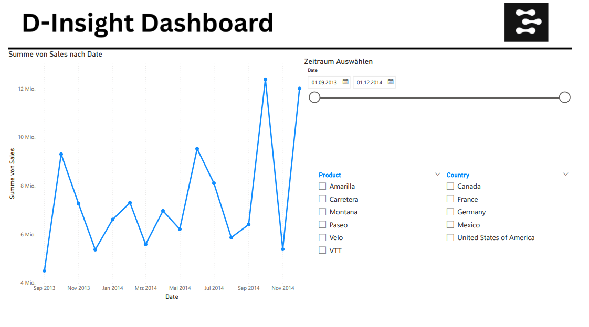
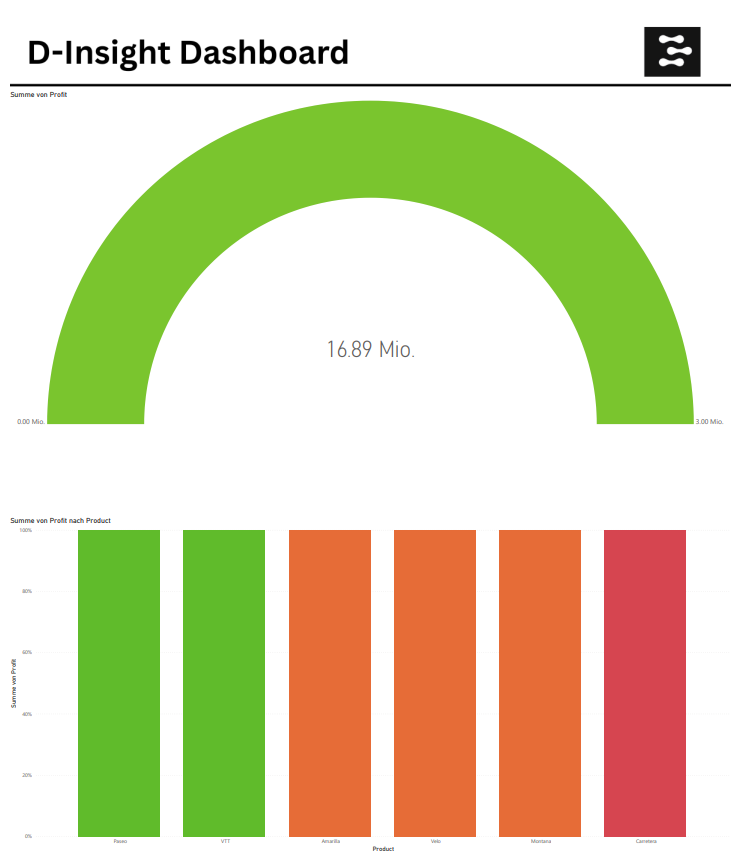

Portfolio

Dieses Dashboard zeigt, wie sich die Verkaufszahlen über einen frei wählbaren Zeitraum entwickeln. Über einen Zeitschieberegler kann der gewünschte Zeitraum eingegrenzt werden, während Filter für Produkt und Land eine gezielte Analyse ermöglichen. So lassen sich Trends schnell erkennen – z. B. welches Produkt in welchem Land am besten verkauft wurde. So kann man Entscheidungen datenbasiert treffen.

Das Dashboard hilft kleinen und mittleren Unternehmen, ihre Leistungen auf einen Blick zu bewerten. Mit einer einfachen Farblogik werden Erfolge und Optimierungspotenzial klar sichtbar: Grün steht für „Ziel erreicht“, Orange für „knapp daneben“ und Rot zeigt, wo Handlungsbedarf besteht.